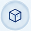

АЗИЯ
Производство • экспорт • технологии • финансирование.
ГЛОБАЛЬНЫЕ
РЫНКИ
РЕАЛЬНЫЕ
ВОЗМОЖНОСТИ
Торговая разведка. Аналитика. Выход на рынки.
SIMURG не изучает рынки абстрактно. Мы выявляем, где и на каких условиях
может быть реализована реальная торговая возможность.
ДАННЫЕ. ЛЮДИ.
ВОЗМОЖНОСТИ.
Спрос, цены, конкуренция, объёмы, сезонность, каналы реализации.
Производители, поставщики, импортеры, дистрибьюторы, торговые сети.

Логистика, банки, страхование, таможня, склады, платежи.
Право, compliance, импортные требования, валютные и операционные риски.
ЛОКАЛЬНАЯ ЭКСПЕРТИЗА
ГЛОБАЛЬНЫЙ РЕЗУЛЬТАТ
Производство • экспорт • технологии • финансирование.
Капитал • энергетика • торговые хабы • инфраструктурные проекты.
Потребительские рынки • производство • стандарты • логистика.
Масштабные рынки • инвестиции • технологии • новые торговые возможности.
СТРУКТУРИРУЕМ
ВОЗМОЖНОСТИ
ДВИЖЕМ ВПЕРЕД
Выявляем возможности
и тренды
Собираем и проверяем
данные
Превращаем данные
в выводы
Оцениваем реализуемость
и условия
Формируем оптимальную
модель
Сопровождаем
реализацию
ПРОЗРАЧНОСТЬ
УВЕРЕННОСТЬ
РАЗВИТИЕ
Где существует реальный спрос.
С кем можно строить торговую модель.
Цена, логистика, финансирование, маржинальность.
Что может остановить или изменить сделку.
Как превратить возможность в исполнимый торговый проект.